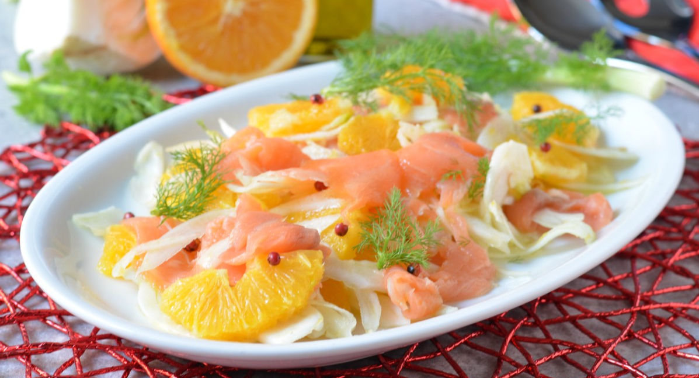

← Tutti gli articoli e le ricette
Ricetta
Finocchio, arancio e salmone

Un pasto veloce e gustoso, senza accendere i fornelli. L'ideale per una pausa pranzo veloce che non rinuncia al gusto.
Ingredienti
- 200 g di finocchi
- 80 g di salmone affumicato
- 50 g di avocado
- 1/2 arancia
- pepe nero
- finocchietto
Preparazione
Taglia il finocchio a fettine sottilissime con una mandolina.
Taglia a cubetti 2 spicchi di arancia, togliendo la parte bianca, e spremi il resto.
Taglia il salmone a strisce e l'avocado a dadini.
Unisci tutto, condisci con il succo d'arancia, aggiusta di sale e pepe e aggiungi il finocchietto... et voilà!
Accompagna con una porzione di pane integrale per completare il pasto.
Vuoi imparare a bilanciare tutto quello che ti piace?
Scopri Equilibrium, il mio percorso online per imparare a mangiare di tutto con equilibrio, senza diete.
Scopri come funziona Equilibrium